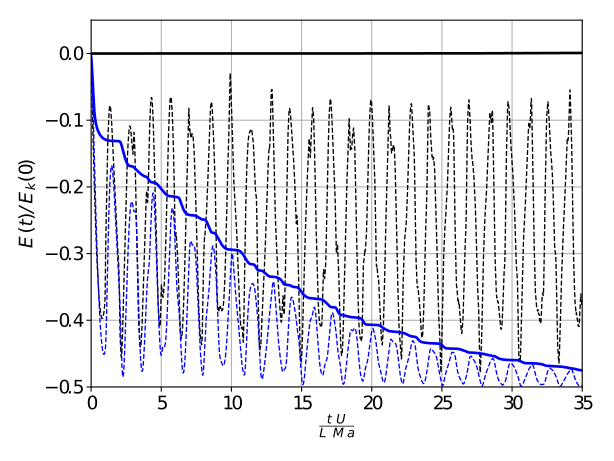

Analysis of time integration schemes for energy conservation in WC-SPH
EQUA Simulation AB
Jose Luis Cercos-Pita
<jlcercos@upm.com>
CEHINAV UPM
Pablo Eleazar Merino-Alonso
Javier Calderon-Sanchez
Daniel Duque
In this presentation we will have a quiz!
For instance...
One of the most praised features of SPH is...
-
its great conservation properties
-
its great consistency properties
-
its great stability properties
-
none, we just enjoy pain
Energy conservation violations were shown by...
-
Colagrossi et al (2009)
-
Me et al (2017)
-
You (2021)
-
Alien vs. Predator (2004)
$$\SPH{\frac{\D \rho}{\D t}}_i(t) = -\rho_i(t) \SPH{\Div{\bs{u}}}_i(t)$$
$$\SPH{\frac{\D \bs{u}}{\D t}}_i(t) =
- \frac{\SPH{\Grad{p}}_i(t)}{\rho_i(t)}
+ \bs{g}
- k_{\Grad{\gamma}} \frac{p_i(t) \SPH{\Grad{\gamma}}_i(t)}{\rho_i (t)}$$
$$\SPH{\Div{\bs{u}}}_i(t) = \sum_{j \in \Omega}
\frac{\bs{u}_j(t) - \bs{u}_i(t)}{\rho_j(t)} \Grad{W}_{ij} m_j$$
$$\SPH{\Grad{p}}_i(t) = \sum_{j \in \Omega}
\frac{p_j(t) - p_i(t)}{\rho_j(t)} \Grad{W}_{ij} m_j$$
$$\SPH{\Grad{\gamma}}_i(t) = \sum_{j \in \Omega}
\frac{1}{\rho_j(t)} \Grad{W}_{ij} m_j$$
Colagrossi et al (2012) - "Particle packing algorithm for SPH schemes"
$$\SPH{P}_k(t) = \sum_{i \in \Omega} m_i \, \bs{u}_i(t) \cdot \SPH{\frac{\D \bs{u}}{\D t}}_i(t)$$
$$\SPH{P}_k(t) = \SPH{P}_{\Grad{p}}(t) - P_p(t) + k_{\Grad{\gamma}} \SPH{P}_{\Grad{\gamma}}(t)$$
$$\SPH{P}_{\Grad{p}}(t) =
- \sum_{i \in \Omega} \frac{m_i}{\rho_i(t)} \bs{u}_i(t) \cdot
\SPH{\Grad{p}}_i(t)$$
$$P_{p}(t) = - \sum_{i \in \Omega} m_i \bs{u}_i(t) \cdot g$$
$$\SPH{P}_{\Grad{\gamma}}(t) =
- \sum_{i \in \Omega} \frac{m_i p_i(t)}{\rho_i(t)} \bs{u}_i(t) \cdot
\SPH{\Grad{\gamma}}_i(t)$$
$$\SPH{P}_c(t) = \sum_{i \in \Omega} \frac{m_i p_i(t)}{\rho_i^2(t)} \SPH{\frac{\D \rho}{\D t}}_i(t)$$
We can relate $\SPH{P}_k$ and $\SPH{P}_c$ because...
-
$\SPH{P}_k + P_p + \SPH{P}_c = 0$
-
$\bs{u}_i \cdot \SPH{\Grad{p}}_i =
p_i \SPH{\Div{\bs{u}}}_i$
-
$\sum \bs{u}_i \cdot (\SPH{\Grad{p}}_i + 2 p_i \SPH{\Grad{\gamma}}_i)=
\sum p_i \SPH{\Div{\bs{u}}}_i$
-
$E = m c^2$
$$\SPH{P}_k(t) + P_p(t) + \SPH{P}_c(t) =
(k_{\Grad{\gamma}} - 2) \SPH{P}_{\Grad{\gamma}}(t)$$
If $k_{\Grad{\gamma}} = 2$ we can assert that...
-
We are conserving energy
-
We are not conserving energy
-
We are maybe or maybe not conserving energy
-
All of the above
Have you scored 4/4?
How so we are not conserving energy?
A posteriori Euler equivalent scheme
$$\frac{\D \rho_i}{\D t} (t_{n + 1/2}) := \frac{\rho_i(t_{n + 1}) - \rho_i(t_{n})}{\Delta t}$$
$$\frac{\D \bs{u}_i}{\D t} (t_{n + 1/2}) := \frac{\bs{u}_i(t_{n + 1}) - \bs{u}_i(t_{n})}{\Delta t}$$
Feel free to remove the "($t_{n + 1/2}$)" from left hand sides!
If... $E_k(t) = \sum_{i \in \Omega} m_i \, \vert \bs{u}_i(t) \vert^2$
<The actual kinetic energy of the system>
then...
$$\frac{E_k(t_{n + 1}) - E_k(t_{n})}{\Delta t} = P_k(t)$$
$$P_k(t) = \sum_{i \in \Omega} m_i \, \bs{u}_i(t_{n + 1/2}) \cdot \frac{\D \bs{u}_i}{\D t} (t_{n + 1/2})$$
<The actual kinetic power of the system>
Thus we can grant conservation...
-
Applying an implicit midpoint scheme
-
Reducing the time step
-
Applying any implicit scheme
-
Marinating it
If...
$$\frac{\D \bs{u}_i}{\D t} (t_{n + 1/2}) = \SPH{\frac{\D \bs{u}}{\D t}}_i(t_{n + 1/2})$$
then...
$$\frac{E_k(t_{n + 1}) - E_k(t_{n})}{\Delta t} = \SPH{P}_k(t_{n + 1/2})$$
and then if $k_{\Grad{\gamma}} = 2$...
$$\SPH{P}_k(t_{n + 1/2}) + P_p(t_{n + 1/2}) + \SPH{P}_c(t_{n + 1/2}) = 0$$
If...
$$\frac{\D \rho_i}{\D t} (t_{n + 1/2}) = \SPH{\frac{\D \rho}{\D t}}_i(t_{n + 1/2})$$
then...
$$P_c(t_{n + 1/2}) = \SPH{P}_c(t_{n + 1/2})$$
and finally...
$$E_k(t_{n}) + E_p(t_{n}) + E_c(t_{n}) = E(t=0)$$
Explicit
Euler
Heun/Improved Euler
Explicit
$$\frac{t c_0}{L} = 0$$
$$\frac{t c_0}{L} = 0.2$$

BLUE = Marrone et al (2015) - "Prediction of energy losses in water impacts using incompressible and weakly compressible models"
BLACK = Me et al (2021) - "Changing title work"
Who is right?
-
Marrone et al (2015)
-
Me et al
-
No-one
-
Both